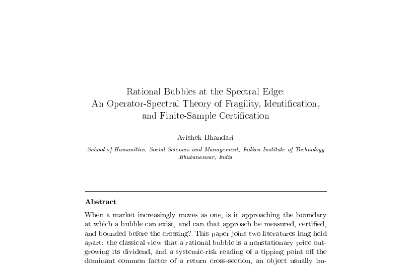

WORKING PAPER58 ppCrisis, Contagion & the Fragility Edge
Rational Bubbles at the Spectral Edge: An Operator-Spectral Theory of Fragility, Identification, and Finite-Sample Certification
Working paper · Entronomics programme
When markets move more and more in lockstep, are they drifting towards the point where a price bubble becomes possible, and can that drift be measured before the crossing? This paper joins two long-separate ideas, that a rational bubble is a price outgrowing its dividends and that a crisis threshold can be read off the strength of a market's single dominant factor, onto one object recovered from the data: a summary of how asset returns move together, paired with a discount rate. We call this crossing point the fragility edge and show it plays three roles at once. A stated discipline says what the data support: the edge firmly, with a margin of error; whether a bubble exists, only roughly; which asset carries it, not at all. Across eighteen global equity indices from 2004 to 2024, that dominant factor strengthens in every documented crisis, the market collapsing from about six to about four independent factors; once the discount is set so that calm markets sit at the edge, this strength crosses it in crisis. These readings coincide with crises, not forecasts.

Working paper
Full text in preparation
This working paper belongs to the Crisis, Contagion & the Fragility Edge movement of the Entronomics programme. The full manuscript is being prepared; the abstract and its place in the programme are above. The forthcoming book draws the movements together.